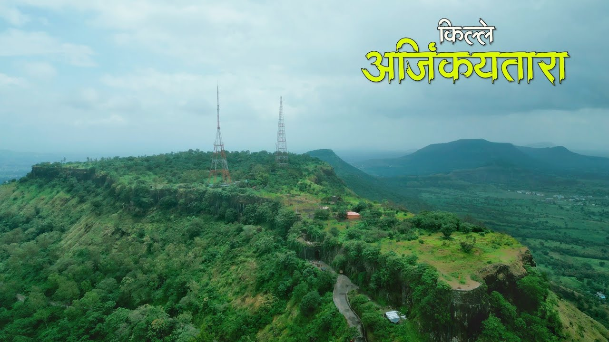

Ajinkyatara Fort
Ajinkyatara Fort is a historic fort in Satara, known for its panoramic views and Maratha history.
Learn More
Sajjangad Fort
Sajjangad Fort is a spiritual and historic site, associated with the saint Samarth Ramdas.
Learn More
Vasota Fort
Vasota Fort is a remote fort surrounded by dense forests and the Koyna backwaters, ideal for trekkers.
Learn More
Kalyangad Fort
Kalyangad Fort is a historic fort known for its ancient caves and scenic surroundings.
Learn More
Pratapgad Fort
Pratapgad Fort is a historic site famous for the Battle of Pratapgad and its association with Shivaji Maharaj.
Learn More